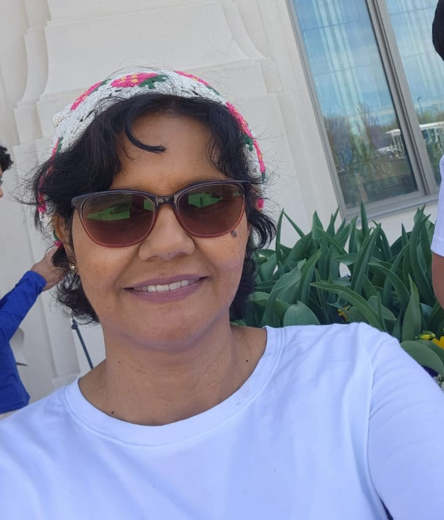

About Me
My name is Desire Vargas,I was born in La Ceiba, Atlantida, Honduras, but I live at La Paz, La Paz, Honduras.I am pursuign a Bachelor Degree in Sofware Development. I love FamilySearch, Scriptures Journalign and to play the piano.
La Paz, La Paz, Honduras
Honduras, officially the Republic of Honduras, is a country in Central America. Honduras is bordered to the west by Guatemala, to the southwest by El Salvador, to the southeast by Nicaragua, to the south by the Pacific Ocean at the Gulf of Fonseca, and to the north by the Gulf of Honduras, a large inlet of the Caribbean Sea. Its capital and largest city is Tegucigalpa.